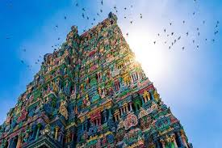
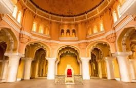

Arulmigu Meenakshi Sundaraswarar Temple is a historic Hindu temple located on
the southern bank of the Vaigai River in the temple city of Madurai.
It is dedicated to the goddess Meenakshi, a form of Shakti, and her consort,
Sundareshwarar, a form of Shiva.The most striking feature of this shrine is its 14 majestic towers or Gopurams,
displaying intricate carvings. Another captivating part of this Dravidian-style temple
is The Hall of Thousand Pillars, yet another example of architectural excellence.
The Meenakshi Temple is the physical center of the city of Madurai as well as its economic, mythical,
and spiritual heart.The Meenakshi temple has two separate shrines for the goddess Meenakshi
and god Sundaresvara, just like most Shaiva temples.Both open to the east.
The Devi shrine is on the south side , while the Deva shrine is more centrally placed, to the north,
thus placing the goddess as the pradhana murti or the "more important" right side within the complex,
states Fuller.The shrine for Sundareswarar is the largest within the complex and its
entrance is aligned with the eastern gopuram.

The Thirumalai Nayakar Mahal is a fine example of splendid architecture and rich history.

Thirumalai Nayak Palace was constructed as a residence for the then King Thirumalai Nayak in 1636 AD.
It is said that King had recruited an Italian architect for designing this palace.
This palace which was apparently four times bigger in its original form than the present structure had
seen many destructions over the passing decades.This palace was built with foliated brickwork, while the
polished texture of the palace came from the use of chunnam which is a combination of shell lime with egg white.
This palace is known for its majestic pillars, with height of about 82 feet and width of almost 19 feet.

Vandiyur Mariamman Teppakulam is a popular temple pond complex in Madurai.
This temple tank, which is the largest in South India, is spread over an area of about 16 acres.
It is at a distance of 4 km from Meenakshi Amman Temple and is frequented by devotees from across the country.
The temple pond complex features a small manmade island in the middle with Maiya Mandapam/
Central Mandampan and a temple of Lord Vigneshwara/Lord Vinayaka.
Elegant granite stairs surround this
massive pond on all 4 sides. The best time to visit Madurai’s temple pond is in the month of January
or February when the colourful and vibrant “Float Festival” is celebrated on a full moon night.
Thousands of lamps illuminate the temple pond complex and lend a mesmerising look to the entire place.
Azhagar Kovil, sometimes also referred to as Alagar Koil, is situated a few kilometers
away from Madurai at the foot of Alagar Hills.
The temple is surrounded by the ruins of an ancient fort that add to the beautiful natural setting of the place. Paramaswamy is
the main deity at this temple.
The processional deity is Kallazhagar or Sundararaja Perumal,
who is believed to be the brother of Goddess Meenakshi and an incarnation of Lord Vishnu.
There are many theerthams located nearby.
Noopura Ganga, which is believed to have fallen directly from heaven,
is visited by almost every devotee.
Thirupparamkunram Murugan Temple is a Hindu temple located in Thirupparamkunram town of Madurai district. It is said to be one of the six abodes of Lord Murugan. Apart from Murugan, idols of Lord Shiva, Lord Vishnu, Lord Vinayaka and Goddess Durga are also housed in the main shrine. The temple features a rock-cut architecture and considered to have been constructed by the Pandyas during the 6th century. The temple is located 8 km away from Madurai city and follows Shaivite practice of worship.The importance of this temple is that the marriage of Lord Subrahmanya with Devayanai, the daughter of Indra, was celebrated here. The Cave shrines here are calculated as 8th century creation of the Pandiyans. The Sanctum Sanctorum is carved out of a single rock and the temple is believed to be in existence for many centuries. The walls and the pillars have fascinating carvings.